A folk tale from Japan
The Rolling Rice Ball
"Story, story — are your ears open?" Kai: "Open!"
Once upon a time, in a little wooden house in the mountains of Japan, lived a kind old Grandpa and a kind old Grandma.
Every morning Grandma made rice balls — soft little triangles, wrapped in crispy seaweed — and tied them in a cloth for Grandpa's lunch.
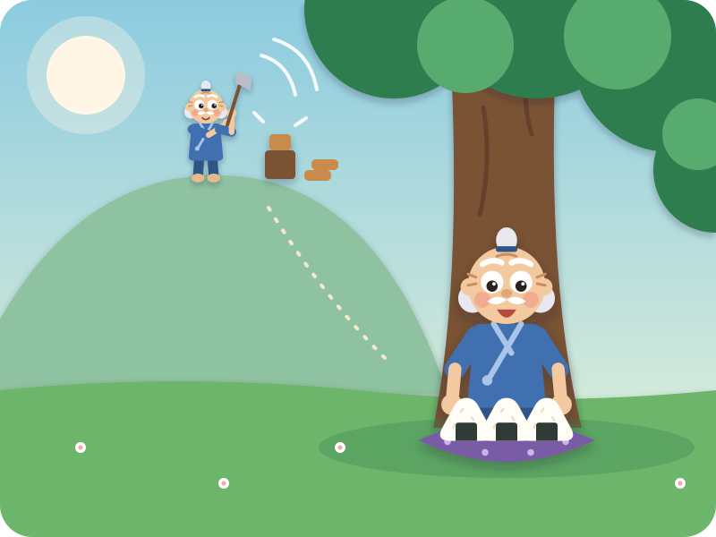
Up the mountain Grandpa went, to chop wood. Tok! Tok! Tok! Kai chops with his hands
At lunchtime he sat under a big old tree and opened his cloth. "Mmm, rice balls!"
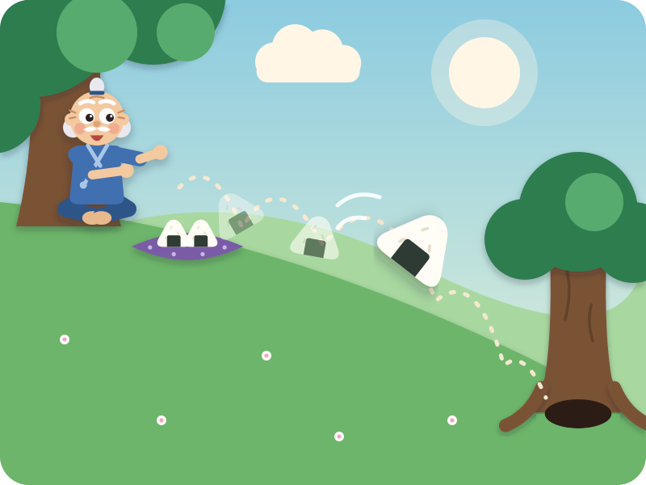
But — oops! — one rice ball slipped out of his fingers, and rolled down the hill…
Rolly-poly, rolly-poly, roll, roll, roll! Kai rolls his hands round and round
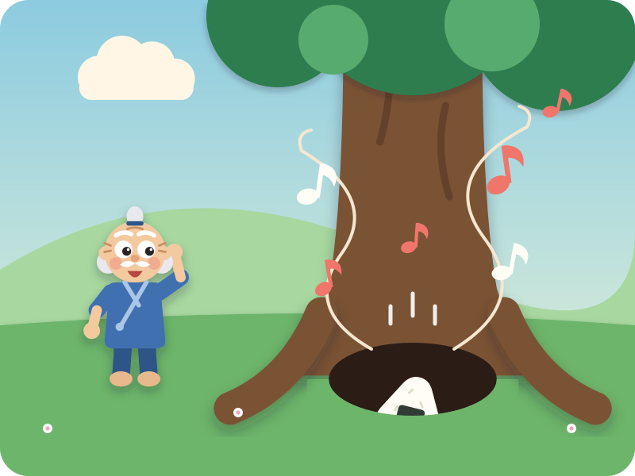
…right into a little hole between the tree roots. Plop!
And from deep inside the hole came tiny, happy voices, singing:
"Rice ball, rice ball, rolly-roll — tumble down into our hole! Ton-ton!"
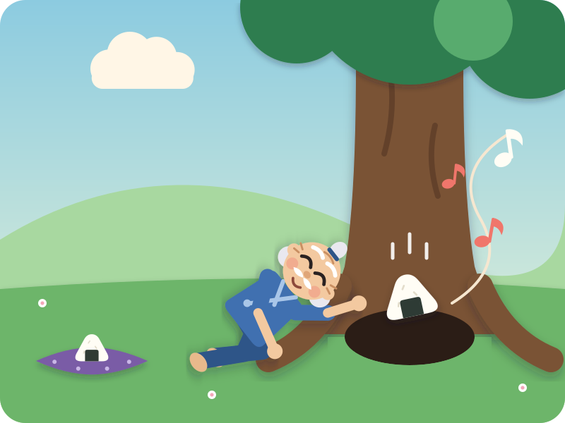
Grandpa put his ear to the hole. "What a lovely song!" So he rolled down another rice ball…
"Rice ball, rice ball, rolly-roll — tumble down into our hole! Ton-ton!" sing it together
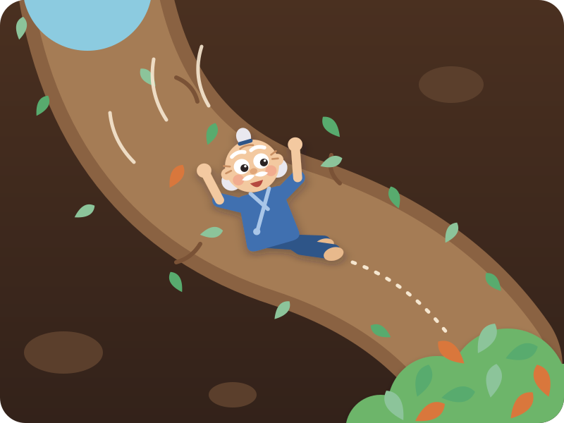
Grandpa leaned closer… and closer… and — wheeeee! — down he slid, down a long leafy tunnel, and landed — floomph — on a soft pile of leaves.
Not hurt one bit!
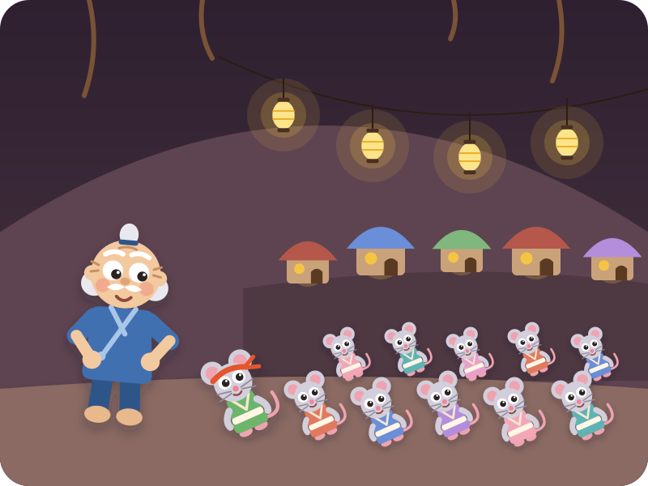
He was in a mouse village! Tiny houses, glowing lanterns, and lots and lots of little mice, all bowing.
"Thank you for the yummy rice balls, Grandpa!" they squeaked. Kai bows
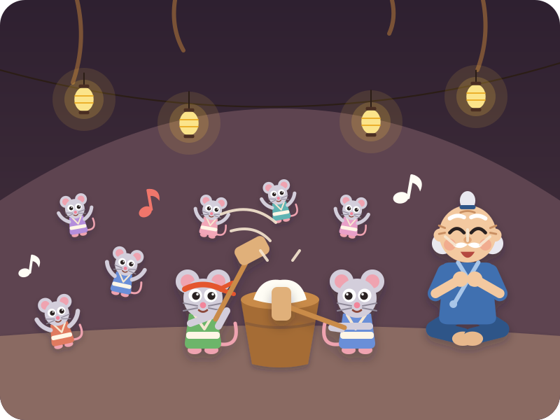
The mice had a party! Two mice pounded sticky rice cakes with big wooden hammers — Pettan! Pettan! Kai claps on every "pettan"
Everyone danced, and Grandpa clapped along, and laughed and laughed.
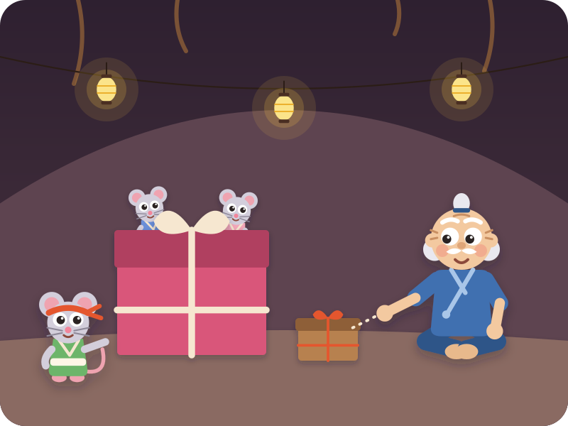
When it was time to go, the mice brought out two presents: a big box and a small box. "Choose one, Grandpa!"
"I'm old, and the small one is easy to carry," said Grandpa. "The small one, please." Which would Kai choose?
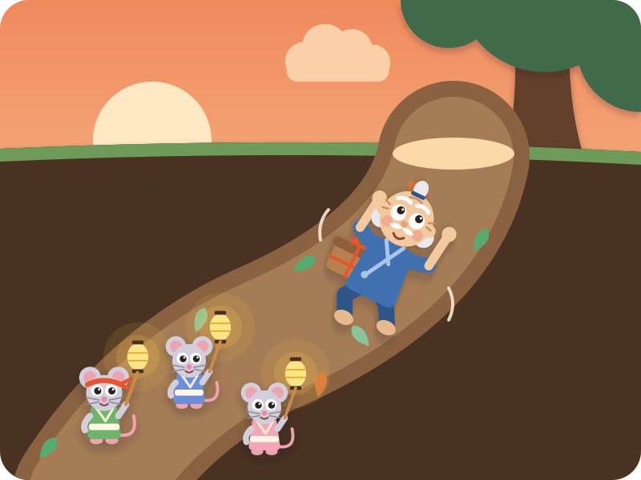
The mice showed him the way back up, waving their lanterns. "Goodbye, Grandpa! Come back soon!"
Home he went, as the sun went down.
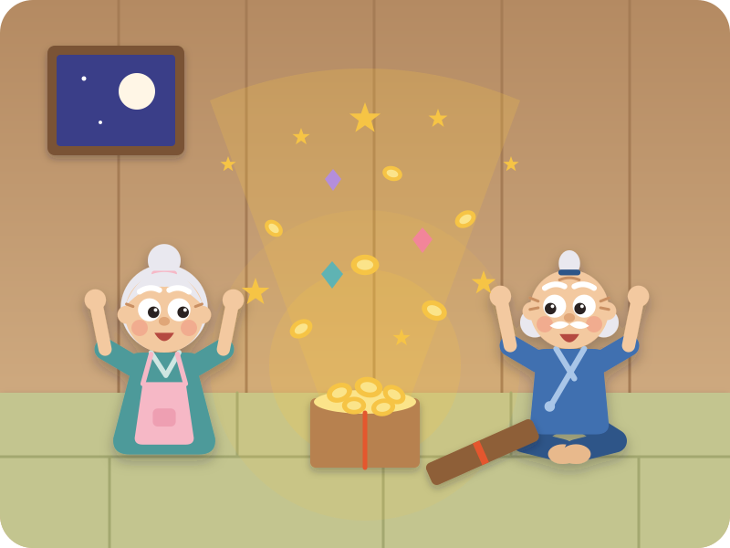
Grandma and Grandpa opened the small box together… and it sparkled! Shiny gold coins, and treasures, more than they had ever seen.
Enough for them, and enough to share with all their neighbours.
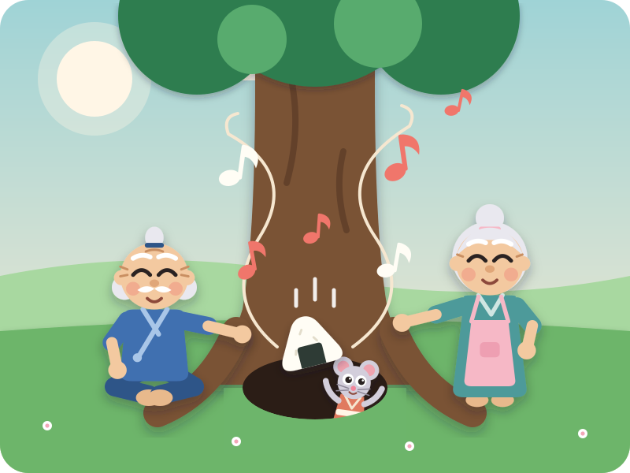
And every day after that, Grandma made one extra rice ball, and Grandpa rolled it down the hole…
"Rice ball, rice ball, rolly-roll — tumble down into our hole! Ton-ton!"
The End
"Snip, snap, snout — this tale's told out."
Swipe back to read it again
Driving? Tell it without the page · six beats
The picture book is for home, bedtime, or a passenger. In the car, tell it from memory — bold is Kai's part.
- Grandma makes rice balls; Grandpa chops wood on the mountain — tok, tok, tok!
- A rice ball rolls away — rolly-poly, roll, roll, roll! — into a hole under a tree.
- Tiny voices sing: "Rice ball, rice ball, rolly-roll — tumble down into our hole! Ton-ton!"
- Grandpa slides down the tunnel into a mouse village. The mice say thank you and throw a party — pettan! pettan!
- Big box or small box? Grandpa picks the small one. Inside: sparkling treasure, enough to share.
- Every day after, they roll one rice ball down the hole — and hear the happy song.
After the story · car-friendly wondering
"Why did the mice like Grandpa so much?"
"Big box or small box — which would YOU pick?"
"Shall we make rice balls this weekend and roll one (gently!) for the mice?"
Where this story comes from
Omusubi Kororin (おむすびころりん, "the rice ball rolls") is a much-loved Japanese folk tale; the mice's song, "omusubi kororin, suttonton", is something Japanese children sing along to. In the old telling, a greedy neighbour copies Grandpa, frightens the mice with a cat's meow to grab all their treasure, and ends up lost in the dark underground. This retelling is our own, for a 4-year-old: we kept the kind grandpa, the song, the rice-cake party and the small box — and left out the greedy neighbour.